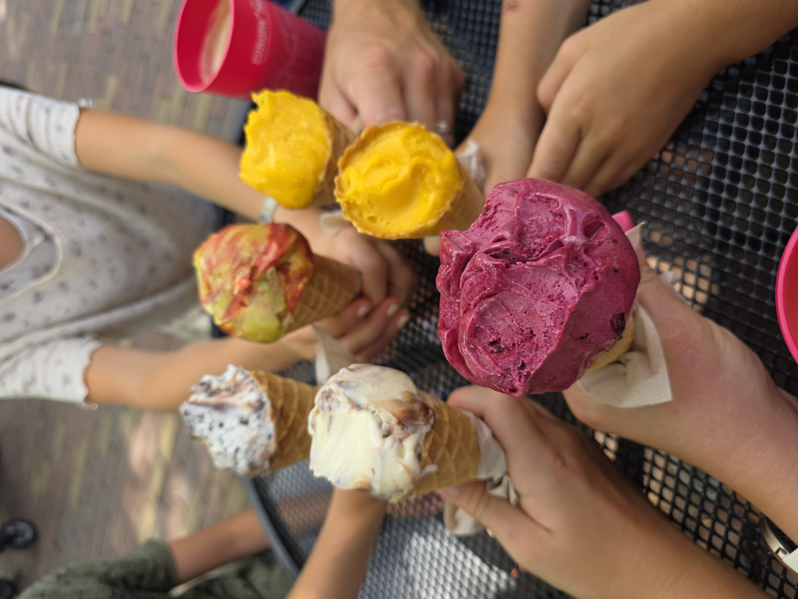
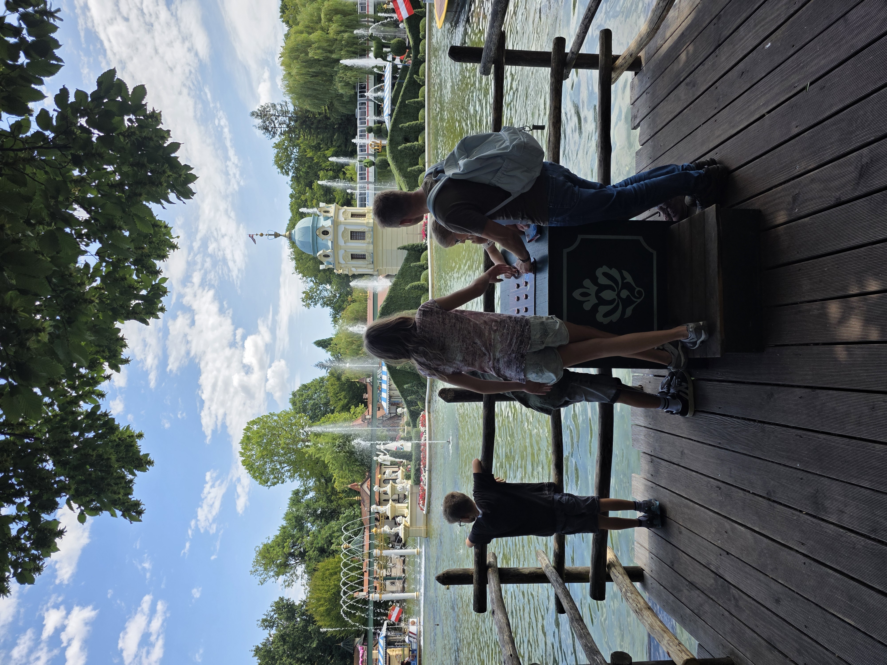

Ich hab drei Jahre gebraucht, bis mein Business regelmässig Geld gebracht hat.

Mum Life Balance
Was diese Jahre waren
Drei Jahre, in denen ich meine Positionierung aufgebaut hab, Produkte und Freebies erstellt hab — vieles wieder verworfen und neu gemacht. Immer wieder.
Mum Life Balance
Die ehrliche Wahrheit
Kein glücklicher Zufall, keine perfekten Umstände. Ich bin einfach drangeblieben — hab verändert, Neues probiert, gemacht.
Mum Life Balance
Der ganze Unterschied
Umsetzen.
Mum Life Balance

Und heute?
Diese Woche war bei uns Familien-Programm pur — vorgestern Europapark, gestern daheim, heute Museum. Und das Business läuft trotzdem. Das ist der Lohn von diesen drei Jahren.
Mum Life Balance
Also: schaff ich das?
„Schaff ich das überhaupt?" — ja. Dranbleiben reicht. Du musst es nur nicht allein und im Blindflug machen wie ich damals. Genau dafür ist die MBA da: der Weg in der richtigen Reihenfolge, zwei Calls im Monat und eine Gruppe, die mitträgt.
Mum Life Balance
Ehrliche Frage
Woran scheitert bei dir das Umsetzen grad am meisten?
↓ Stimm ab in der Umfrage
Zeit · Zu viele Ideen · Selbstzweifel · Kein Plan
Mum Life Balance
Nicht mehr allein dranbleiben
Schreib mir „MBA"
→
Wir schauen ehrlich, ob's für dich passt. Der Pioneer-Preis läuft noch.